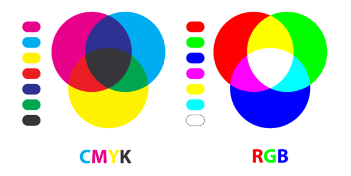
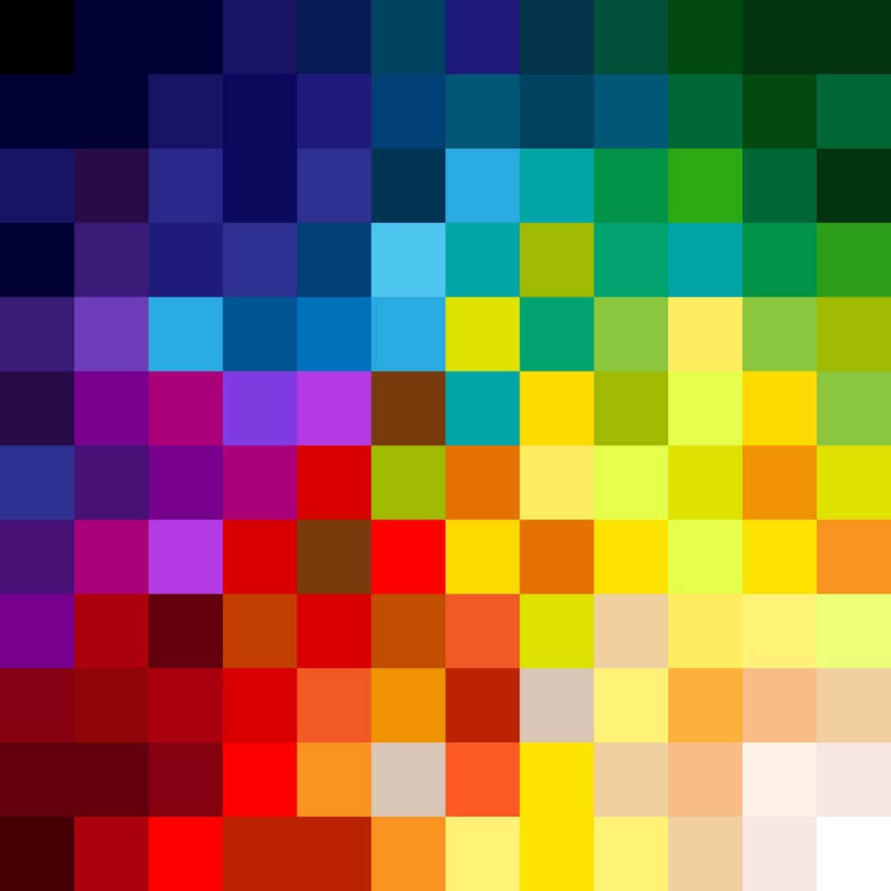
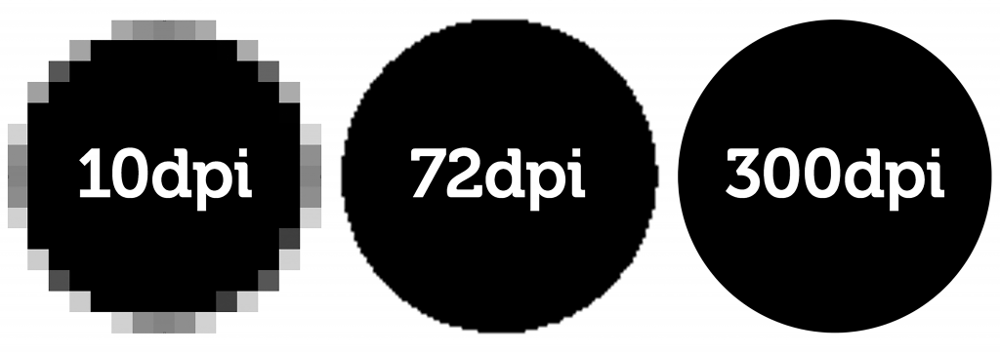

Kleurmodellen zijn manieren om kleuren te beschrijven. Ze laten zien hoe kleuren worden gebruikt in technologie. Elk model zet kleuren op een speciale manier, bijvoorbeeld hoe licht of donker ze zijn. Voor ontwerpers zijn ze heel belangrijk om de juiste kleuren te kiezen. Kleurmodellen zorgen ervoor dat kleuren op schermen en papier hetzelfde blijven. Kleurmodellen zijn dus heel effectief om iets duidelijker te maken door middel van kleur.
RGB staat voor Rood, Groen en Blauw. Het is een kleurmodel dat gebruikt wordt om kleuren te maken op digitale schermen, zoals computers, tv's en smartphones.
Licht: RGB werkt met licht. Kleuren worden gemaakt door verschillende hoeveelheden van de drie kleuren licht (rood, groen en blauw) te mengen.
Combinatie: Als je alleen rood licht gebruikt, zie je de kleur rood. Meng je rood en groen, dan krijg je geel. Bij volledige menging van rood, groen en blauw zie je wit licht.
Waarden: Elke kleur krijgt een waarde tussen 0 en 255. Dit betekent dat je 256 verschillende intensiteiten van elke kleur kunt gebruiken. Bijvoorbeeld, (255, 0, 0) is helder rood, terwijl (0, 255, 0) helder groen is.
CMYK staat voor Cyaan, Magenta, Geel en key of color(zwart). Dit kleurmodel wordt voornamelijk gebruikt in de drukindustrie, zoals voor boeken en tijdschriften.
Inkt: CMYK werkt met inkt in plaats van licht. Kleuren worden gemaakt door verschillende hoeveelheden van deze vier inkt kleuren te mengen.
Menging: Dit betekent dat kleuren ontstaan door licht weg te nemen. Als je bijvoorbeeld cyaan en magenta mengt, krijg je blauw, omdat deze kleuren het licht dat weerkaatst wordt combineren.
Zwart: De toevoeging van zwart (K) helpt om diepere, donkerdere kleuren te maken en zorgt ervoor dat er meer details zichtbaar zijn in de afdruk.
Pixels zijn de kleinste eenheden van een digitale afbeelding. Ze zijn meestal kleine vierkante vakjes die samen een compleet beeld vormen. Elke pixel heeft een specifieke kleur en wanneer veel pixels samenkomen, creëren ze een afbeelding die we kunnen zien. De kwaliteit van een afbeelding hangt af van het aantal pixels; meer pixels betekent vaak meer details en scherpte. Pixels zijn essentieel in digitale media, zoals foto's en video's.
Resolutie geeft aan hoeveel detail een afbeelding of scherm kan tonen, gemeten in pixels. Het wordt vaak weergegeven als breedte x hoogte, zoals 1920x1080. Een hogere resolutie betekent meer pixels, wat leidt tot scherpere beelden. Resolutie is belangrijk voor de kwaliteit van foto's, video's en digitale schermen. Ook bij afdrukken is een hogere resolutie nodig voor scherpe prints.
Als je het nog steeds niet begrijpt klink dan op de link om meer over te lezen, ben je liever een kijk persoon klik dan op de 2de link voor een uitleg filmpje.
Uitleg tekst